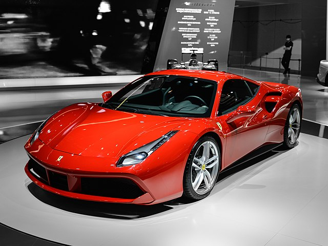

Trabajo practico Nº03
1.1- ¿Para qué sirve la etiqueta ul? Dar un ejemplo en donde lo utilizarías.
la ul o lista desordenada (unordered list) sirve para ordenar elementos de manera aleatoria. Esta se puede utilizar para una lista de supermercado, por ejemplo.
1.2- ¿Para qué sirve la etiqueta ol? Dar un ejemplo en donde lo utilizarías.
La etiqueta ol o lista ordenada (ordered list) cumple la misma funcion que la ul, la unica diferencia es que esta es mas ordenada, poniendo los objetos en cierto orden (Alfabetico, numerico, etc).
1.3- ¿Para qué sirve la etiqueta dl? Dar un ejemplo en donde lo utilizarías.
LA etiqueta dl o lista descriptiva (Descripcion List) sirve para crear una lista con descripciones en sus sujetos. Un ejemplo de estos prodia ser la review de una serie o saga peliculas (netflix lo usa en sus series, describiendo sus capitulos).
1.4- ¿Para qué sirve la etiqueta li? Dar un ejemplo en donde lo utilizarías.
La etiqueta li se utiliza para crear elementos de lista en un documento HTML
1.5- Crea una lista desordenada con tres elementos (li) que contengan nombres de países de América del Sur.
1.6- Crea una lista ordenada con cinco elementos (li) que contengan los días de la semana en orden alfabético.
- Lunes
- Martes
- Miércoles
- jueves
- Virnes
- Sábado
- Domingo
1.7- Anida una lista desordenada dentro de otro elemento li de otra lista desordenada para crear una lista anidada de frutas y verduras.
- Verduleria
- frutas:
- Manzana.
- Banana.
- Kiwi.
- Tomate.
- Sandia.
- Verduras:
- Zapallo.
- Papa.
- Batata.
- Cebolla.
1.8- Crea una lista ordenada, respetando las negritas y el subrayado, que contenga los siguientes pasos para hacer una tarta de manzana.
- Pelar y cortar las Manzanas en rodajas finas.
- Mezclar la canela, el azúcar y la Harina en un tazón.
- Colocar la masa de la tarta en un molde para horno.
- Colocar las manzanas sobre la masa de la tarta.
- Hornear la tarta durante 45 minutos.
1.9- Existe un atributo que se aplica a la etiqueta ol para ver la lista en orden descendente en vez de ascendente, ¿cuál es ese atributo? Utilizar la referencia de atributos de H
reversed.Indica si la lista debe ser mostrada en orden descendente en vez de ascendente.
1.10- Utilizando el atributo anterior, crear una lista con cuatro elementos que contengan nombres de películas de terror de forma descendente.
- El exocista.
- El resplandor.
- Hereditary.
- La bruja
1.11 Elegir un gusto particular y realizar una lista descriptiva de por lo menos 5 elementos. El título debe tener un enlace que lleve a un sitio de referencia. Utilizar en las descripciones etiquetas: strong, em, img.
Autos deportivos.
- Ferrari 488 GTB.

- Un super deportivo de origen italiano con un motor de V8 bitubo de 3.9 litros, que ofrece 661 caballos de fuerza y un diseño erodinamico icónico.
Ferrari 488 GTB
- Lamborghini Aventador.

- Equipado con un motor V12 de 6.5 litros, este auto italiano ofrece 759 caballos de fuerza y un diseño agresivo y futurista.
Lamborghini Aventador
- Porsche 911 turbo S.

- Un clasico alema con un motor boxer de 6 cilindros de doble turbo, que genera 640 caballos de fuerza, conocido por su equilibrio y rendimiento.
Porsche 911 turbo S.
- McLaren 720s.
- UN super deportivo britanico con un motor V8 biturbo de 4.0 litross, que entrega 710 caballos de fuerza junto a una aceleracion imprecionante
McLaren 720s
- Chevlorelt Corvette C8
.jpeg)
- Este deportivo estadounicense cuenta con un motor V8 de 6.2 litros, produciendo 495 caballos de fuerza y un diseño de motor central trasero.
Chevlorelt Corvette C8.